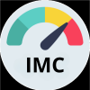

Salud Cardíaca
Último registro: 19:14
114 ms
HRV
80 bpm
Pulso
46 %
Nivel de estrés
Peso y IMC
Calcula tu IMC y peso para mantener tu salud en forma.
Azúcar en Sangre
Monitorea tus niveles de azúcar para una mejor salud.
Presión arterial
Controla tu presión arterial para prevenir riesgos.